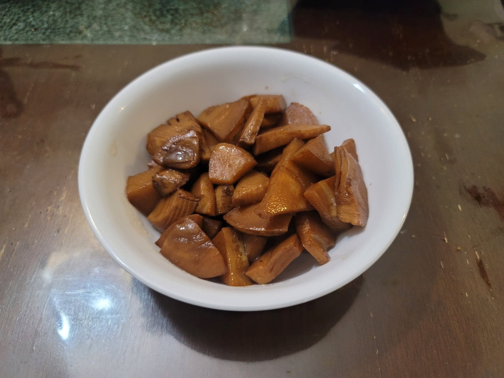

Yóu Mèn Sun (Braised Spring Bamboo Shoots)

Ingredients:
- 1 lb Fresh spring bamboo shoots or fresh winter bamboo shoots, chopped, blanched for 2-3 minutes if using winter bamboo
- 3 tbsp Canola oil
- 2-4 slices Ginger
- 2 tsp Sugar
- 2 tsp Shaoxing wine
- 1 1/2 tbsp Light soy sauce
- 1/2 tsp Dark soy sauce
- Water
Instructions:
- Heat the oil in a wok over medium heat. Add the ginger and cook for about 1 minute. Then lower the heat and stir in the sugar. Cook until the sugar completely dissolves.
- Turn the heat up to high and add in the bamboo. Stir-fry until the bamboo starts to brown on the edges, 5-10 minutes.
- Add in the shaoxing wine, water, light soy sauce, and dark soy sauce. Stir to combine and let come to a boil. Then reduce to medium and cover. Cook for about 10 minutes. Then remove the cover and raise the heat to high. Let the sauce reduce to preference. Serve immediately.